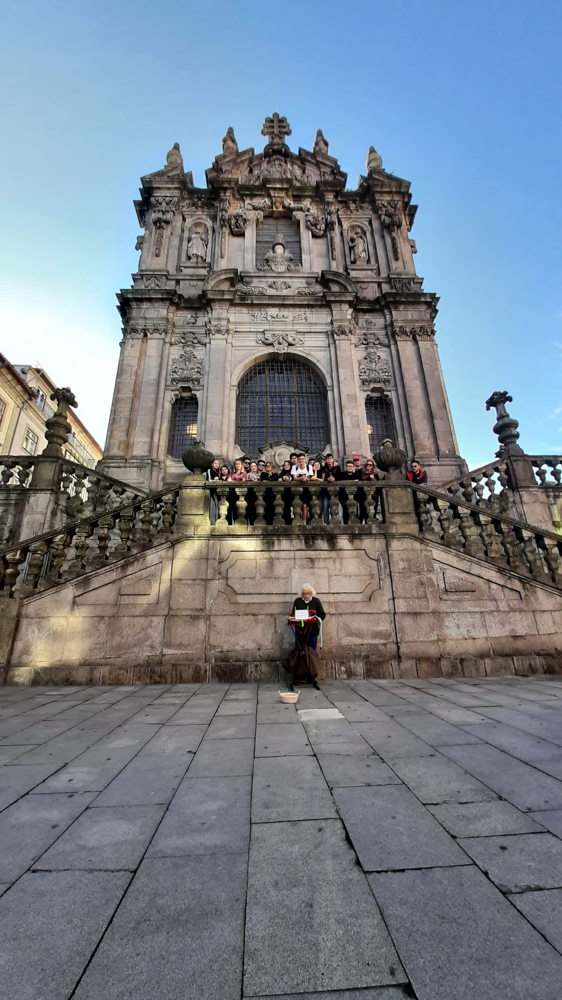
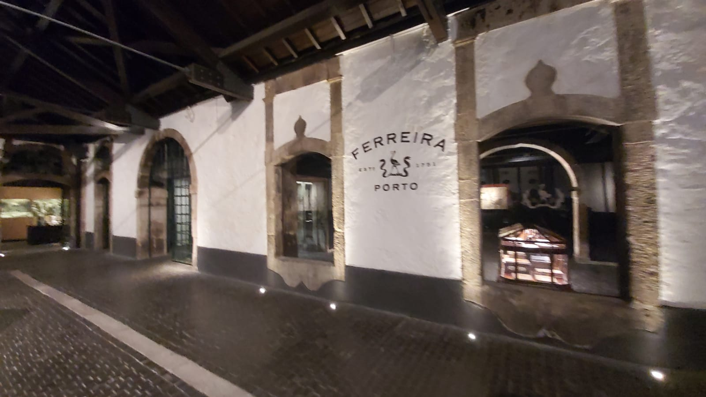
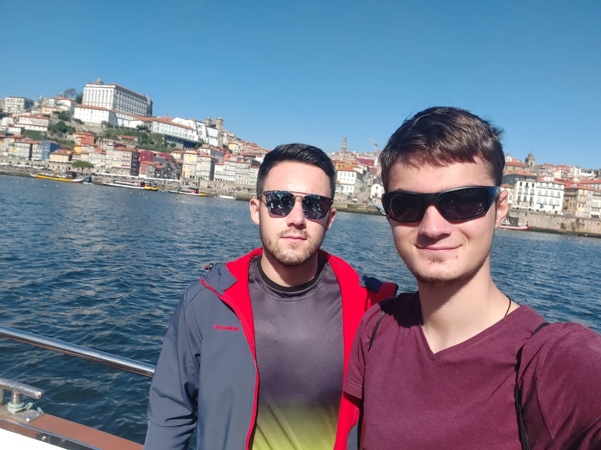
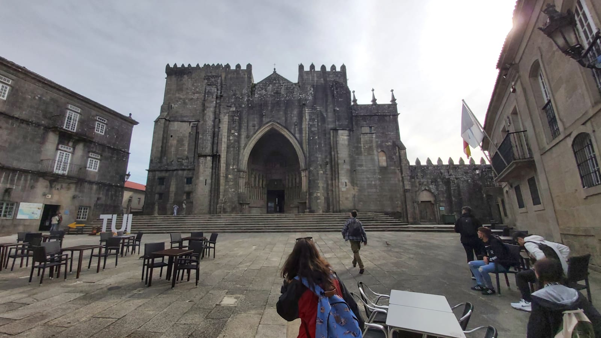
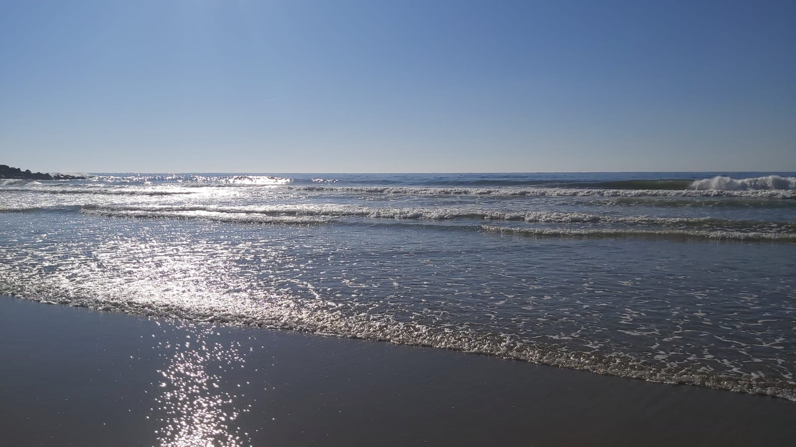

Barcelos
Monuments visited: Central Tower, Central Church, The pottery museum, Arheological museum.


Braga
Monuments visited: Santuário do Bom Jesus do Monte.

Porto
Monuments visited: Ferreira winery, Lello library, Train station from Porto, Douro river.




Atlantic Ocean and Spain
"Tui" city from Spain and the church from Tui and Atlantic Ocean from a Portugal beach.



